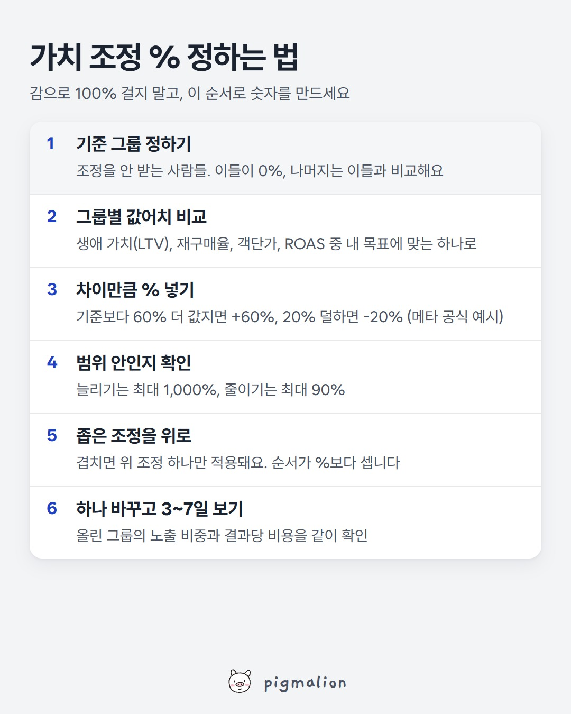

가치 조정 % 정하는 법
저장해두고 성과가 떨어질 때 위에서부터 확인하세요

이미지를 길게 누르면 저장돼요
가치 조정, 공식 설명으로 조금 더 자세히
가치 조정은 특정 타겟·노출 위치·전환 위치의 결과가 나에게 얼마나 더(또는 덜) 값진지 메타에 알려주는 기능이에요. 메타는 그에 맞춰 입찰가를 조정해 게재해요.
■ 조정 범위: 입찰가를 최대 1,000% 늘리거나 최대 90% 줄일 수 있어요
■ 쓸 수 있는 기준: 연령, 성별, 위치, OS, 기기 플랫폼, 일부 노출 위치, 전환 위치
■ 조정에 해당 안 되는 사람: 조정 안 된 원래 입찰가가 적용돼요
■ 못 쓰는 경우: ROAS 목표, 입찰가 한도 같은 수동 입찰 전략
■ 특별 광고 카테고리: 연령·성별·도시 등 일부 기준은 쓸 수 없어요 (고르면 오류가 나고 광고가 거부돼요)
■ 만드는 곳: 광고 설정 또는 광고 세트에서 만들고, 각 광고 세트에 적용해요
■ 참고: 전환이 늘 수 있지만 결과당 비용도 늘 수 있어요
공식 예시 1 · 값어치만큼 올리고 내리기
25~44세 남성의 평균 생애 가치(LTV)가 기준보다 60% 높고, 25~44세 여성은 20% 낮다면
→ 25~44세 남성 입찰가 +60%, 25~44세 여성 입찰가 -20%
→ 둘 다 아닌 사람은 원래 입찰가 그대로
공식 예시 2 · 쪽지(규칙)가 겹치면
규칙 1: 캘리포니아에 사는 여성 +20%
규칙 2: 특정 모바일 OS를 쓰는 여성 +50%
캘리포니아에 살면서 그 OS를 쓰는 여성은 두 규칙에 다 해당하지만,
순서상 첫 번째인 규칙 1만 적용돼서 +20%만 받아요. 더 큰 %가 아니라 순서가 이겨요.
출처: Meta 광고 관리자 도움말 "가치 조정 정보"
AI 프롬프트
■ 어디에: 챗GPT, 클로드, 제미나이 중 아무거나 (무료 버전도 돼요)
■ 무엇을: 메타 광고 관리자의 연령·성별 분석 표 (지출, 결과, 구매 전환값이 있으면 더 좋아요)
■ 어떻게:
1. 광고 관리자 → 가치 조정을 걸고 싶은 캠페인·광고 세트 선택 → 오른쪽 위 "분석 기준" → "연령 및 성별"
2. 기간은 최근 30일 정도로, 결과가 충분히 쌓인 기간을 고르기
3. 표를 드래그해서 복사(Ctrl+C) — 또는 "내보내기"로 CSV 파일 받기
4. AI 새 대화에 아래 프롬프트를 "복사" 버튼으로 복사해 붙여넣고, 맨 끝 자리에 표를 붙여넣기
5. 엔터. 그룹마다 몇 % 걸면 될지, 규칙 세트에 어떤 순서로 넣을지 나와요
너는 메타 광고를 운영하는 퍼포먼스 마케터야. 아래에 연령·성별 분석 표를 붙여넣을게. 이걸로 가치 조정 %를 정하고 싶어. 가치 조정 규칙(메타 공식): - 특정 그룹의 입찰가를 최대 1,000% 늘리거나 최대 90% 줄일 수 있어 - 조정에 해당 안 되는 사람은 원래 입찰가 그대로야 - 규칙이 겹치면 규칙 세트에서 위에 있는 조정 하나만 적용돼 이 순서로 해줘. 1) 그룹별 값어치: 연령×성별 그룹마다 결과당 비용(CPA), ROAS(전환값이 있으면), 결과 수를 표로 정리해줘. 결과가 너무 적은 그룹(예: 10건 미만)은 "데이터 부족"으로 표시하고 계산에서 빼줘. 2) 기준 그룹: 결과가 가장 많이 쌓인 그룹, 또는 전체 평균을 기준(0%)으로 잡아줘. 왜 그걸 골랐는지 한 줄로. 3) % 계산: 기준보다 얼마나 더 값진지/덜 값진지를 %로 바꿔줘. 예: ROAS가 기준보다 60% 높으면 +60%, 20% 낮으면 -20%. 범위(+1,000% ~ -90%)를 넘으면 범위 끝으로 맞춰줘. 4) 처음 걸 값: 계산값을 그대로 쓰지 말고, 처음엔 절반 정도로 작게 시작하는 안도 같이 줘. (내 추천 방식이야, 공식 규칙은 아니야) 5) 규칙 세트 순서: 겹치는 조건이 있으면 좁은 조건을 위로 올린 순서로 "가치 조정 1, 2, 3…"을 적어줘. 넓은 조정이 좁은 조정의 우위를 지우는 경우가 있으면 경고해줘. 숫자가 부족해서 판단 못 하는 부분은 "판단 보류"라고 따로 적고, 추측은 추측이라고 써줘. [여기에 연령·성별 분석 표 붙여넣기]